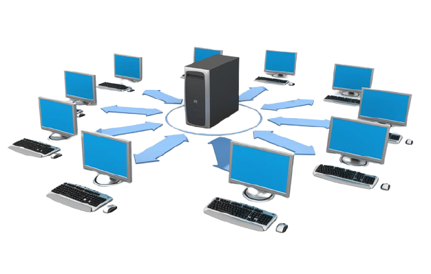
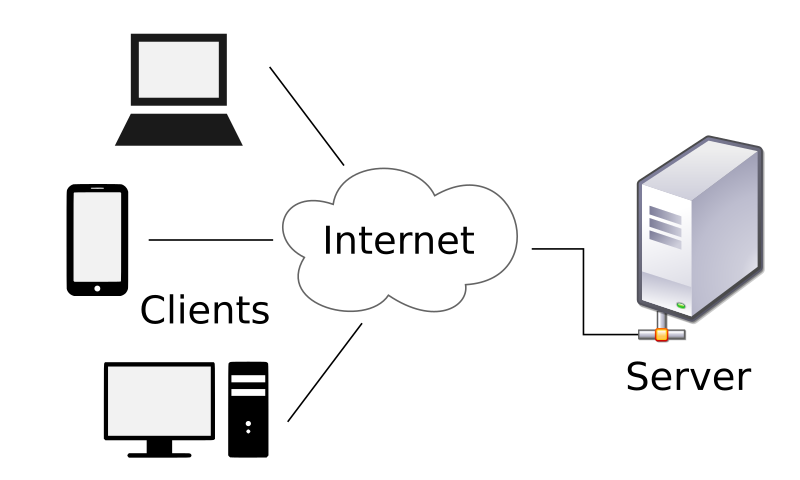
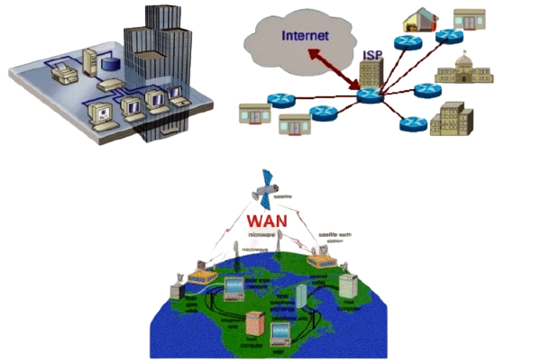
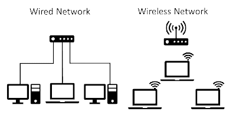

Jaringan Komputer

jaringan komputer adalah dua atau lebih komputer yang terhubung satu sama lain dan digunakan untuk berbagi data. Jaringan komputer dibangun dengan kombinasi hardware dan software.
Untuk membuat jaringan komputer, switch dan router menggunakan berbagai protokol dan algoritma untuk bertukar informasi dan untuk membawa data ke titik akhir yang diinginkan.Setiap titik akhir (kadang disebut host) dalam jaringan memiliki pengenal unik, sering kali alamat IP atau alamat Media Access Control yang digunakan untuk menunjukkan sumber atau tujuan transmisi. Endpoint dapat mencakup server, komputer pribadi, telepon, dan berbagai jenis hardware jaringan.
Jaringan komputer juga mungkin dibuat dengan menggunakan gabungan teknologi kabel dan wireless. Perangkat jaringan berkomunikasi melalui medium transmisi kabel atau wireless. Untuk jaringan yang menggunakan kabel, Anda mungkin membutuhkan optical fiber, coaxial cable, atau kabel tembaga. Sementara itu, jalur jaringan wireless termasuk jaringan komputer yang menggunakan koneksi data wireless untuk menghubungkan titik akhir. Titik akhir ini termasuk radio siaran, radio seluler, microwave, dan satelit.
Jaringan bisa menjadi private atau publik. Jaringan private biasanya memerlukan user untuk memasukkan kredensial untuk mengakses jaringan. Biasanya, ini diberikan secara manual oleh administrator jaringan atau diperoleh langsung oleh pengguna melalui kata sandi atau dengan kredensial lainnya. Jaringan publik seperti internet tidak membatasi akses.
Jenis-Jenis Jaringan Komputer
Berikut ini jenis – jenis jaringan berdasarkan pengelompokanya :
Berdasarkan Pola Pengoperasian
- Jaringan client-server

Client-server merupakan sebuah hubungan jaringan yang menggunakan prinsip pelayanan dan yang di layani.
- Jaringan Peer to Peer
Peer to peer adalah kumpulan beberapa komputer yang biasanya tidak berjumlah banyak yang terhubung dalam jaringan untuk melakukan koneksi, berbagi data (sharing) dan memakai sumber daya ( resource ) komputer lain seolah itu komputer sendiri.
Berdasarkan Jangkauan

- LAN (Local Area Network)
LAN (Local Area Network) adalah jaringan komputer yang jaringannya hanya mencakup wilayah kecil; seperti jaringan komputer kampus, gedung, kantor, dalam rumah, sekolah atau yang lebih kecil.
- MAN (Metropolitan Area Network)
Jaringan MAN adalah gabungan dari beberapa LAN. Jangkauan dari MAN ini antar 10 hingga 50 km, MAN ini merupakan jaringan yang tepat untuk membangun jaringan antar kantor-kantor dalam satu kota antara pabrik/instansi dan kantor pusat yang berada dalam jangkauannya.
- WAN (Wide Area Network)
Wide Area Network merupakan jaringan komputer yang mencakup area yang besar sebagai contoh yaitu jaringan komputer antar wilayah, kota atau bahkan negara, atau dapat didefinisikan juga sebagai jaringan komputer yang membutuhkan router dan saluran komunikasi publik.
- Internet
Internet merupakan jaringan komputer yang global atau mendunia. Karena Internet merupakan jaringan-jaringan komputer yang terhubung secara mendunia, sehingga komunikasi dan transfer data atau file menjadi lebih mudah.
Berdasarkan Media Transmisi

- Wire Network
Merupakan jaringan komputer yang menggunakan kabel sebagai media penghantar. Pada sebuah network, media transmisi memegang peranan yang sangat penting, karena informasi atau data akan diangkut melalui media transmisi. Pada Wire Network, ada beberapa pilihan kabel yang dapat digunakan, yaitu kabel coaxial, kabel twisted pair (TP) dan kabel fiber optic.
- Wireless (Tanpa Kabel)
Wireless merupakan Jenis Jaringan Komputer yang menggunakan media transmisi data tanpa menggunakan kabel. Media yang digunakan seperti gelombang radio, inframerah, bluetooth, dan microwave. Wireless bisa difungsikan kedalam jaringan LAN, MAN, maupun WAN. Wireless ditujukan untuk kebutuhan mobilitas yang tinggi.